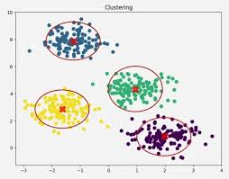
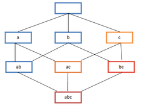
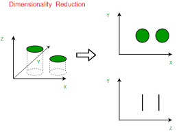

Unsupervised Algorithms
Unsupervised learning algorithms analyze unlabeled data to find patterns or relationships. Since there are no correct answers provided, the model explores the data to identify structure on its own. This method is useful for tasks like clustering and dimensionality reduction. It helps reveal patterns that might not be obvious at first.
Clustering

Clustering algorithms group unlabeled data into clusters based on how similar or close the data points are to each other. This is often used for things like market segmentation or organizing large datasets. Clustering can also help detect anomalies by identifying data points that don’t fit well into any group. If a point doesn’t belong to any cluster, it may be considered an outlier.
Common Algorithms
- K-Means Clustering: K-means clustering divides data into a set number of clusters, called k. Each data point is assigned to the cluster with the nearest center, known as a centroid. The centroids are repeatedly adjusted based on the average position of the points in each cluster. This process continues until the cluster centers stop changing.
- Gaussian Mixture Models (GMMs): Gaussian mixture models are a type of soft clustering method. Instead of placing a data point into just one cluster, the model calculates the probability that the point belongs to different clusters. It assumes the data follows several normal (bell-shaped) distributions. The model learns the best parameters for each distribution to fit the dataset.
- DBSCAN: DBSCAN groups data points based on how densely they are packed together. Points that are close to many neighbors form clusters, while points in sparse areas are labeled as outliers. Unlike k-means, it does not require choosing the number of clusters ahead of time. It can also detect clusters with more complex shapes.
Association

Association algorithms look for relationships between variables in large datasets. They are often used in things like market basket analysis or recommendation systems. For example, an online store might use them to see which products are frequently bought together. This information can then be used to suggest related items to customers.
Common Algorithms
- Apriori Algorithm: The Apriori algorithm is a classic method used to find frequent item combinations in a dataset. It works by gradually exploring larger groups of items and removing combinations that appear rarely. The main idea is that if a group of items appears frequently, then its smaller subsets should also appear frequently. While it is simple and flexible, it can become slow and use a lot of memory with very large datasets.
- Dynamic Itemset Counting (DIC): Dynamic Itemset Counting is a more efficient variation of association algorithms. It works similarly to Apriori but processes the dataset in smaller portions instead of scanning everything each time. As the algorithm runs, it dynamically adds new items and expands its search. This approach helps reduce computation and makes the process faster.
Dimensionality reduction

Dimensionality reduction algorithms are used to simplify complex datasets by reducing the number of features needed to represent the data. They take high-dimensional data and transform it into a smaller set of dimensions while keeping the most important information. This makes the data easier to analyze and visualize. It’s especially useful when working with large or complex datasets.
Common Algorithms
- Principal Component Analysis (PCA): Principal Component Analysis (PCA) reduces the number of variables in a dataset by combining them into a smaller set of new variables. These new variables, called principal components, capture the most important patterns in the data. PCA focuses on the components that explain the most variation. This helps simplify the dataset while keeping the most meaningful information.
- t-SNE: t-SNE is a non-linear dimensionality reduction method often used for data visualization. It reduces complex data into two or three dimensions so it can be easily plotted and explored. The algorithm focuses on keeping similar data points close together in the new space. This helps reveal patterns or clusters that may not be obvious in higher dimensions.
- Autoencoders: Autoencoders are neural networks used to learn compressed representations of data. The encoder part reduces the data into a smaller set of features, while the decoder tries to reconstruct the original data from that compressed version. The model learns to keep only the most important information needed for reconstruction. This process helps capture the underlying structure of the data.